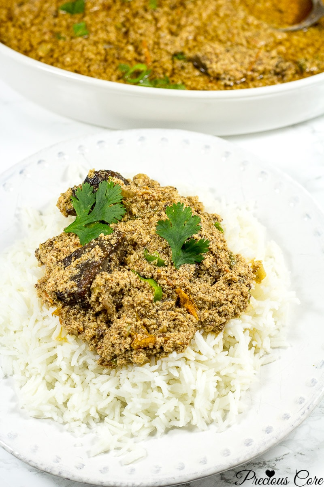
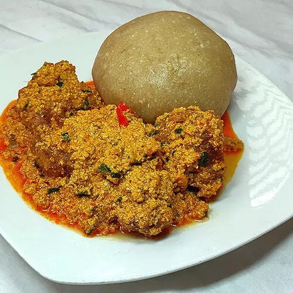

About Egusi soup
Egusi is native to West and Central Africa, and can be found especially in Nigeria, Namibia, Ghana and Sierra Leon. It is the biological ancestor of watermelon. Egusi is arguably the most porpular Nigerian soups
Egusi is made of fat- and protein-rich seeds of certain cucurbitaceous plants (squash, melon, gourd), which after being dried and ground are used as a major ingredient in West African cuisine. The taste of Egusi soup cuts across ethnic groups in Nigeria as it is prepared with different methods. The key ingredient remains the same - egusi.
Ingredients and Measurements
| Ingredients | Measurements |
|---|---|
| Ground melon | 3 Cups |
| Chicken | 5 pieces |
| Ground crayfish | To taste |
| Palm oil | 1/2-1 cup |
| Onions chopped | 1/2 cup |
| smocked mackerel | 1 piece |
| Bitter leaf/Spinach leaf | 1/2 cup |
| Salt | 1 table spoon |
| sesoning cubes | 4 pieces |
| Scotch bonnet pepper | 1 cup |
Preparations
- Cook the chicken and fish; Start by boiling the tougher meats then add the less tough ones. Add salt halfway through the cooking process (about a teaspoon of salt). Reserve the stock of the meat. Also, if using stockfish, be sure to soak it for some hours first and rinse thoroughly before cooking (cook it separately from the other meats/fish and discard of the stock). Stockfish has a very pungent smell so if you aren't used to it you might be shocked at how much it smells. But the taste is amazing in Egusi Soup!
- Grind the egusi using the small cup of a blender, coffee grinder or whatever grinding machine you have on hand. Be sure to remove any bad seeds from the egusi before grinding.
- Place palm oil in a pot and heat up on high for about 3 minutes (do not bleach). Add the onions to the palm oil and saute until fragrant.
- Add the ground egusi to the palm oil and let it cook in it, while you stir from time to time until the egusi shrinks and starts sticking to the bottom of the pot. About 7 minutes.
- Add a teaspoon of crayfish and stir then add the cooked meats and their stock. Add the remaining crayfish, crayfish seasoning cube, habanero or scotch bonnet pepper then add water if needed according to desired thickness. Stir well and taste to ensure that seasoning is perfect. Let all the ingredients simmer together for about 5 minutes.
- Add the greens and let them cook in for about 2 minutes. Turn off the heat - your egusi soup is ready!
Some pictures of Egusi soup served with different sides.

Egusi soup with Garri

Egusi Soup with pounded yam

Egusi soup with Rice
